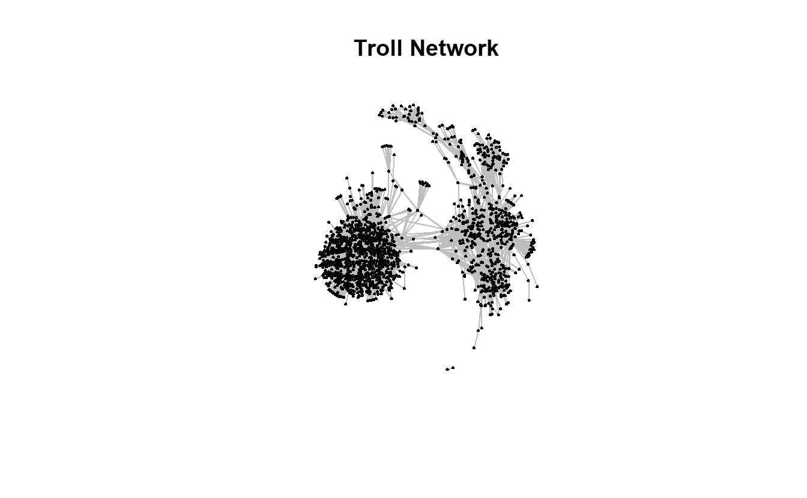
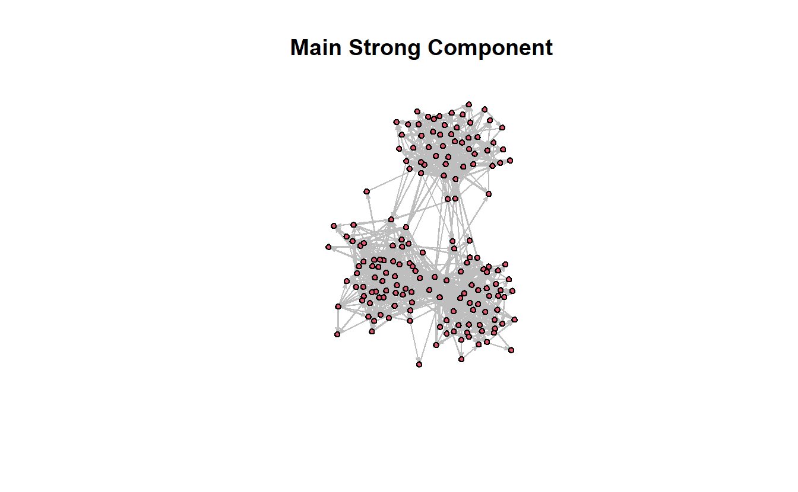
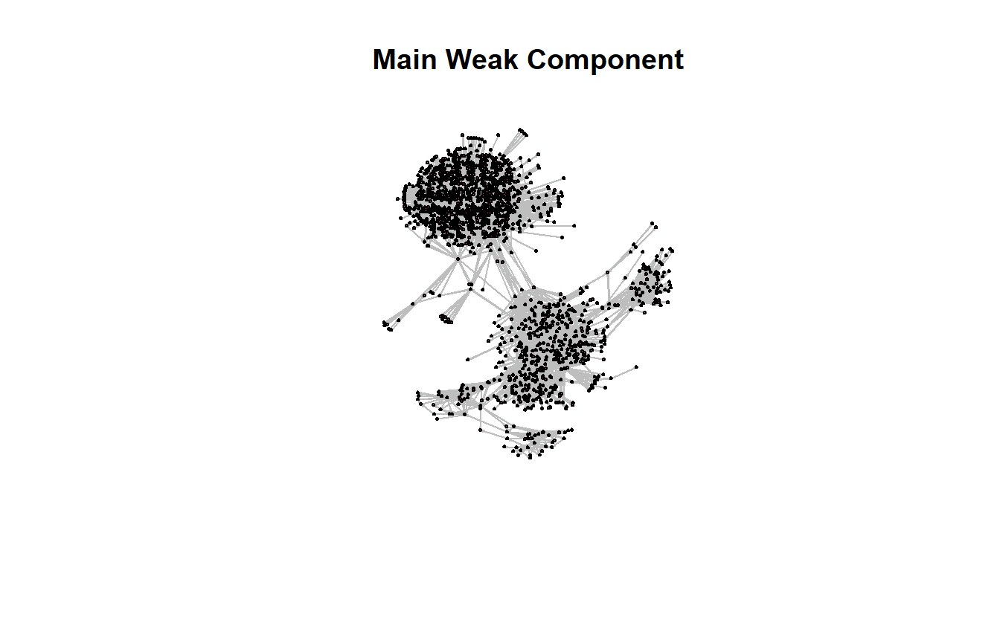
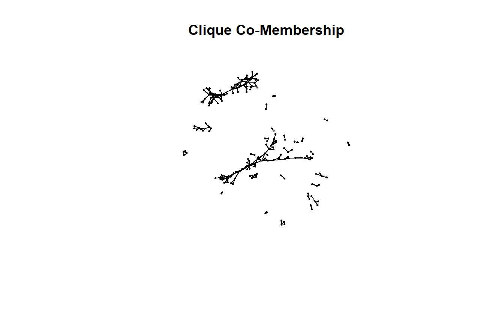
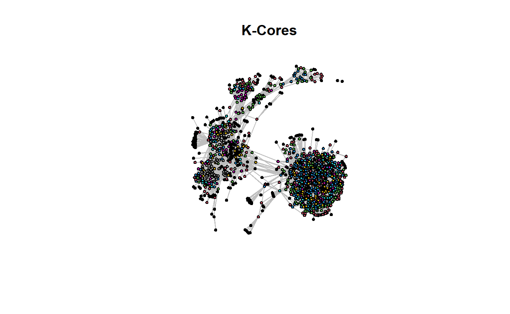

10 Detecting Subgroups in statnet
10.1 Setup
Find and open your RStudio Project associated with this class. Begin by opening a new script. It’s generally a good idea to place a header at the top of your scripts that tell you what the script does, its name, etc.
#################################################
# What: Detecting Subgroups in R with statnet
# Created: 02.28.14
# Revised: 01.24.22
#################################################If you have not set up your RStudio Project to clear the workspace on exit, your environment may contain the objects and functions from your prior session. To clear these before beginning use the following command.
rm(list = ls())Proceed to place the data required for this lab (Troll_EL.csv) also inside your R Project folder. We have placed it in a sub folder titled data for organizational purposes; however, this is not necessary.
Social scientists generally assume that “social interaction is the basis for solidarity, shared norms, identity, and collective behavior, so people who interact intensively are likely to consider themselves a social group.” Thus, a major focus of social network analysis is to identify dense clusters of actors “among whom there are relatively strong, direct, intense, and/or positive ties.” These are typically referred to as “cohesive subgroups,” “subnetworks,” or “sub-clusters.” One way to cluster actors is based on shared attributes (e.g., race, gender, etc.). Another is to use the pattern of ties among actors. That is what this lab demonstrates. In an ideal world, there would be a single algorithm for identifying cohesive subgroups, but this is not an ideal world, so social network analysts have developed a variety of algorithms for identifying subnetworks.
For this exercise, we’ll use a portion of the Twitter Russian Troll network that FiveThirtyEight released in mid-2018.2 This subset is comprised of retweet ties among approximately 1,700 Twitter handles connected to the Internet Research Agency (a Russian “troll factory”) that were active from at least May 2015 and up through the 2016 election. From the original data set, we’ve created an edge list for this subset that contains directed ties among the accounts.
10.2 Load Libraries
Load the statnet library.
library(statnet)10.3 Import and Plot Network
Let’s import the data, which we’ve stored as an edge list, using the read.csv() function.
troll_el <- read.csv("data/Troll_EL.csv", header = TRUE)
# Take a look at the top 5 rows:
head(troll_el) Source Target Type Rel
1 1d_nicole_ ina_malone Directed Retweet
2 1d_nicole_ willie_bign Directed Retweet
3 4ever1937 bydrbre_ Directed Retweet
4 4ever1937 novostidamask Directed Retweet
5 4ever1937 novostinn Directed Retweet
6 4mysquad crystal1johnson Directed RetweetNext, convert the edge list to a network object using the as.network() function. Note we use matrix.type argument to identify the structure of the data as "edgelist and directed = TRUE to indicate that our data are directed.
troll_net <- as.network(troll_el,
directed = TRUE,
loops = FALSE,
matrix.type = "edgelist")
# Take a look at the object
troll_net Network attributes:
vertices = 1704
directed = TRUE
hyper = FALSE
loops = FALSE
multiple = FALSE
bipartite = FALSE
total edges= 9825
missing edges= 0
non-missing edges= 9825
Vertex attribute names:
vertex.names
Edge attribute names not shown Let’s plot the network to see what it looks like.
Since this is a larger network, it will take a little longer to plot the network. Our recommendation is to be patient and avoid clicking on anything until the plot appears.
gplot(troll_net,
gmode = "graph",
main = "Troll Network",
jitter = TRUE,
usearrows = FALSE,
edge.col = "gray")
10.4 Components in statnet
It is fairly straightforward to identify strong and weak components in statnet using the components() function. Our data are directed, so it makes sense to identify both types of components. You can use the is.directed() function to double-check if you have a directed network or not (the answer is TRUE in this case).
is.directed(troll_net)[1] TRUEKnowing the size of the network will be useful as we start looking at the distribution of nodes across various subgroups we detect throughout this lab (n = 1,704).
network.size(troll_net)[1] 1704Now, we’ll go ahead and identify strong components first.
s_comp <- components(troll_net,
connected = "strong",
comp.dist.precomp = NULL)You should see this network contains 1,314 strong components.
s_comp [1] 1314Next, identify weak components.
w_comp <- components(troll_net,
connected = "weak",
comp.dist.precomp = NULL)Your results should indicate there are 11 weak components.
w_comp[1] 2We can determine the distribution of both strong and weak components using the following commands. The first, component.dist(), calculates the distribution of component sizes. This command returns a named list containing three items: component membership ($membership), component size ($csize), and a vector that contains the un-normalized distribution function of component sizes ($cdist).
s_comp_d <- component.dist(troll_net, connected = "strong")
# Inspect the first five entries in the csize vector
s_comp_d$csize[1:5][1] 1 1 168 1 1We are interested in component size here. To find it, use the table() function to tabulate the results. In terms of strong components, the results indicate that there are 1,307 strong components the size of 1, 2 strong components containing 2 nodes, 1 comprised of 3 nodes, 1 made up of 22 nodes, 1 consisting of 35 actors, 1 with 165 nodes, and a main component made up of 168 nodes (adds up to 1,704 nodes).
table(s_comp_d$csize)
1 2 3 22 35 165 168
1307 2 1 1 1 1 1 Next, do the same for weak components. Once you use the table() function, you should see a large weak component of 1,702 accounts and another comprised of 2 accounts (again, that 1,704 accounts, which is what we got when we ran network size earlier).
w_comp_d <- component.dist(troll_net, connected = "weak")
table(w_comp_d$csize)
2 1702
1 1 Sometimes it can be helpful to extract the largest component (also known as the “main component”), such as when working with very large networks or calculating the traditional measure of closeness centrality (Freeman), which doesn’t handle infinite distances.
Here’s how to extract the largest (main) component for both strong and weak components, which we will convert to a network object and then visualize (again, be patient…it may take a second or two to plot). Let’s begin with strong components. To extract it, you will use the component.largest() function, which by default returns a matrix (though the output could be an edge list return.as.edgelist = TRUE).
troll_net_strongmain <- component.largest(troll_net,
connected = "strong",
result = "graph")
class(troll_net_strongmain)[1] "matrix" "array" You could graph the matrix or you could transform it to a network object. We will do the latter.
# Transform to network class object
troll_net_strongmain <- as.network(troll_net_strongmain, directed = TRUE)
# Plot it
gplot(troll_net_strongmain,
gmode = "digraph",
main = "Main Strong Component",
jitter = TRUE,
usearrows = TRUE,
edge.col = "gray")
Now, let’s do the same for weak components (though it’s not super different from our initial network).
# Extract weak largest component
troll_net_weakmain <- component.largest(troll_net,
connected = "weak",
result = "graph")
# Transform to network class object
troll_net_weakmain <- as.network(troll_net_weakmain, directed = TRUE)
# Plot it
gplot(troll_net_weakmain,
gmode = "digraph",
main = "Main Weak Component",
jitter = TRUE,
usearrows = TRUE,
edge.col = "gray")
10.5 Cliques in statnet
Let’s look at cliques in statnet, which is useful for observing shared cliques among actors. For this section we’ll just focus on the main weak component (i.e., troll_net_weakmain).
The clique.census() function computes clique census statistics for a given graph. Adding the parameter to save a “co-membership” matrix (clique.comembership = "sum"), we sum all the times that two nodes appear in the same clique (Butts 2020).
weakmain_clique <- clique.census(troll_net_weakmain,
# Using 'graph' for undirected graph
mode = "graph",
clique.comembership = "sum")The output of the clique.census() function is a named list with three elements. A vector of aggregate counts by clique size ($clique.count), a matrix or array containing co-membership in cliques ($clique.comemb), and a list of lists containing cliques of a corresponding size ($cliques). Here we can extract the $clique.comemb element and transform it into a network object.
weakmain_comemb <- as.network(weakmain_clique$clique.comemb)
# Take a look at the object
weakmain_comemb Network attributes:
vertices = 1702
directed = TRUE
hyper = FALSE
loops = FALSE
multiple = FALSE
bipartite = FALSE
total edges= 456
missing edges= 0
non-missing edges= 456
Vertex attribute names:
vertex.names
No edge attributesThe ties among the accounts in the following visualization represent shared cliques. We will not pay attention to weights here (i.e., how many shared cliques two nodes share).
gplot(weakmain_comemb,
gmode = "onemode",
usearrows = FALSE,
main = "Clique Co-Membership",
displayisolates = FALSE)
statnet calculates the number cliques of a particular size in which each actor is embedded as well. Here, we reshape it as a data.frame, which gives us a little flexibility down the line. For instance, the account acejinev is involved in two cliques the size of two and one clique of size one.
clique_count <- data.frame(
"account" = names(weakmain_clique$clique.count[1, ]),
"one" = weakmain_clique$clique.count[1, ],
"two" = weakmain_clique$clique.count[2, ],
"three" = weakmain_clique$clique.count[3, ],
row.names = NULL
# Remove the aggregate row
)[-1, ]
# Plot first five rows
clique_count[1:5, ] account one two three
2 1d_nicole_ 1 0 0
3 4ever1937 1 0 0
4 4mysquad 0 1 0
5 jusslilstoner 1 0 0
6 acejinev 1 2 010.6 K-Cores in statnet
Now, let’s identify the k-cores in the original troll network (i.e., troll_net). The output is a numeric named vector which includes the max core for each vertex.
troll_cores <- kcores(troll_net)
troll_cores[1:5] 1d_nicole_ 4ever1937 4mysquad jusslilstoner acejinev
2 3 8 1 8 In case you’re having trouble understanding the output, we can summarize the output by building a contingency table of the counts of each k level. The first line of the output below tells us the k-core and the second tells us how many actors make up that core (e.g., 156 accounts are members of the 1-core and 177 in the 12-core).
table(troll_cores)troll_cores
1 2 3 4 5 6 7 8 9 10 11 12
156 145 146 173 158 153 167 173 149 55 52 177 Since the output of the k-core contains a value for each vertex, we could use this as a vertex level attribute and use it to subset the graph. First, let’s assing the k-core values to the nodes.
troll_net <- set.vertex.attribute(troll_net,
attrname = "kcore",
value = kcores(troll_net))
# Take a look at the graph with a new vertex attribute
troll_net Network attributes:
vertices = 1704
directed = TRUE
hyper = FALSE
loops = FALSE
multiple = FALSE
bipartite = FALSE
total edges= 9825
missing edges= 0
non-missing edges= 9825
Vertex attribute names:
kcore vertex.names
Edge attribute names not shown Now plot it and highlight k-core membership.
gplot(troll_net,
gmode = "graph",
main = "K-Cores",
jitter = TRUE,
vertex.cex = 2,
vertex.col = get.vertex.attribute(troll_net, "kcore"),
usearrows = FALSE,
edge.col = "gray")
Let’s plot the graph depicting some of the larger k-cores. This can be accomplished using the get.inducedSubgraph() function and specifying which vertices to keep.
get.inducedSubgraph(troll_net,
# Provide a vector of which vertex IDs to keep
v = which(troll_net %v% 'kcore' == 9)) Network attributes:
vertices = 149
directed = TRUE
hyper = FALSE
loops = FALSE
multiple = FALSE
bipartite = FALSE
total edges= 412
missing edges= 0
non-missing edges= 412
Vertex attribute names:
kcore vertex.names
Edge attribute names not shown Note that the number of vertices above matches the coreness table previously calculated.
Using this form, we can create 9, 10, 11 and 12 core subgraphs and plot them side-by-side.
par(mfrow = c(2, 2))
# Create a 9-core graph
gplot(
get.inducedSubgraph(troll_net,
v = which(troll_net %v% 'kcore' == 9)),
displaylabels = FALSE,
main = "9-Core"
)
# Create a 10-core graph
gplot(
get.inducedSubgraph(troll_net,
v = which(troll_net %v% 'kcore' == 10)),
displaylabels = FALSE,
main = "10-Core"
)
# Create a 11-core graph
gplot(
get.inducedSubgraph(troll_net,
v = which(troll_net %v% 'kcore' == 11)),
displaylabels = FALSE,
main = "11-Core"
)
# Create a 12-core graph
gplot(
get.inducedSubgraph(troll_net,
v = which(troll_net %v% 'kcore' == 12)),
displaylabels = FALSE,
main = "12-Core"
)The previous graphs are a little misleading, however, because the 12-core is part of the 11-core, and the 12- and 11-cores are part of the 10-core, and so on. In other words, the 9-core won’t have isolates if the 10, 11, and 12 cores are included.
gplot(get.inducedSubgraph(troll_net,
v = which(troll_net %v% 'kcore' >= 12)),
displaylabels = FALSE,
main = "9-12 Core")One last thing, working with directed and/or valued data will provide different results than working with symmetric and dichotomous data. For instance, UCINET (2002) defines a k-core as:
A k-core in an undirected graph is a connected maximal induced subgraph which has minimum degree greater than or equal to k. For a valued graph we require the sum of all the edges incident with a vertex is greater than k.
Please keep that in mind as you move forward.
10.7 Community Detection in statnet
Psych!!!!!
statnet does not offer any community detection algorithms at this point. You will need to turn to igraph to utilize them.
That’s all for statnet for now.